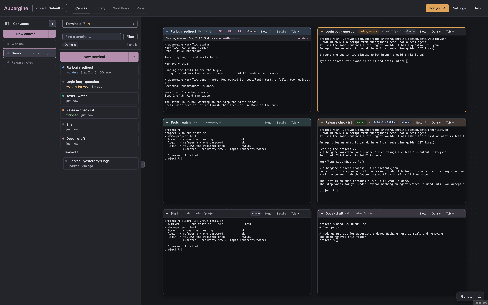

A canvas of terminals
Pan, zoom and arrange real terminals. Click once to type. Park a terminal and bring it back later.
Aubergine puts your terminals side by side on a canvas in your browser. Queue work for your coding agents, keep each one in its own copy of the code, and answer only the ones that are waiting.
Install in one line View on GitHub$ curl -fsSL https://raw.githubusercontent.com/meatgarden/aubergine/main/install.sh | shSee it
The demo that comes with Aubergine: stand-in agents, no real ones.

How it works
Start with a plain terminal. Add structure only when you want it.
Open any shell or agent. Arrange, resize and group terminals, and keep canvases as tabs inside projects.
Write a task once and put it in the queue, or schedule it for a time of day. A free agent takes it when you say so.
One list, For you, gathers every question, approval and finished task. Nothing waits unseen.
What you get today
All of this is built and runs on your machine now.
Pan, zoom and arrange real terminals. Click once to type. Park a terminal and bring it back later.
Busy, idle or waiting for you, on every terminal. The “For you” list and “next waiting” take you straight to what needs a person.
Write a task once and let a free agent take it. Schedule tasks for a time of day, on the days you choose.
Give each agent its own copy of a repository on its own branch, so two agents never edit the same files.
One server, several control rooms. Each project has its own canvases, queue, schedules and rules, and can be saved as a file or a template.
Give an agent steps to follow, stop at a step that waits for a person, and watch every live run on one board.
Let agents talk to each other with named senders, limits and pauses, closed by default for each canvas.
A local HTTP API with scoped tokens, a typed client, and an MCP server that lists only the tools a credential may use.
The aubergine command starts terminals, queues tasks, sets schedules, reads the board and approves runs, from any terminal on the machine.
See what changed while you were away, search terminal output, and reopen past conversations from the palette.
Built to be trusted
The server listens on 127.0.0.1 and checks the Host and Origin of every request.
Every terminal is a tmux session. Close the browser or restart Aubergine and your work keeps running.
Aubergine runs ordinary terminals, so any command-line agent works. It does not pick or call a model for you.
Tokens are scoped, drafts from agents wait for your review, and approvals are made by a person. No model calls of its own.
None of this exists today. It is what we want to build next, and the order may change.
People working together, and agents reached from the tools you already use.
Agents that do not need your laptop awake.
How much an agent may do, and a record of what it did.
Checks that happen before work is called done.
More ways to reach and build on Aubergine.
Install
You need macOS with tmux 3.2 or newer, Node.js 22 or newer, and pnpm.
curl -fsSL https://raw.githubusercontent.com/meatgarden/aubergine/main/install.sh | sh
aubergine start --open starts the server and opens your browser, signed in.
Click Show me around on the empty canvas. It makes a Demo canvas of stand-in agents and walks you through eight short steps. aubergine demo --remove takes it away.
The installer changes only ~/.aubergine and one link named aubergine. It never uses sudo and never edits your shell startup files.
Questions
A local, browser-based canvas of terminal sessions. Each terminal is a node you can arrange and use, so you can run several coding agents at once and see which one is waiting for you.
No. Everything runs on your own computer. The server listens on 127.0.0.1 only and checks the Host and Origin of every request.
macOS with tmux 3.2 or newer, Node.js 22 or newer, and pnpm. Linux should work but has not been tested yet.
They keep running. Each session is a tmux session that outlives both the browser and the Aubergine server.
It works like any program: you type to it as usual. But Aubergine only knows an agent is there when it started the agent itself (New terminal, then Claude Code), because it adds a few small hooks that report what the agent is doing. Started by hand, the terminal just shows as busy running claude: it is not marked as waiting for you when it asks something, and when you start a workflow there, nothing is typed for it. Tell it yourself to run aubergine workflow status, which still works from inside, or start the agent from the New terminal menu instead.
Aubergine runs ordinary terminals, so any command-line agent can run in one. Agents can also report their status through a command and a local API, and can use an MCP server that lists only what their token allows.
Both are planned and neither is built. Planned work includes multiplayer, where several people share a canvas with their agents, and sandboxed agents running in the cloud. Today everything runs on one computer.
Yes. It is free and open source under the MIT license, and its source is on GitHub.
Two things: the install folder (~/.aubergine) and one link named aubergine. It never uses sudo, never edits your shell startup files and never installs Node.js, pnpm or tmux. aubergine uninstall removes what it made.